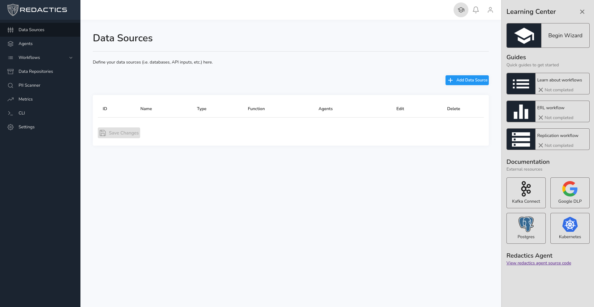
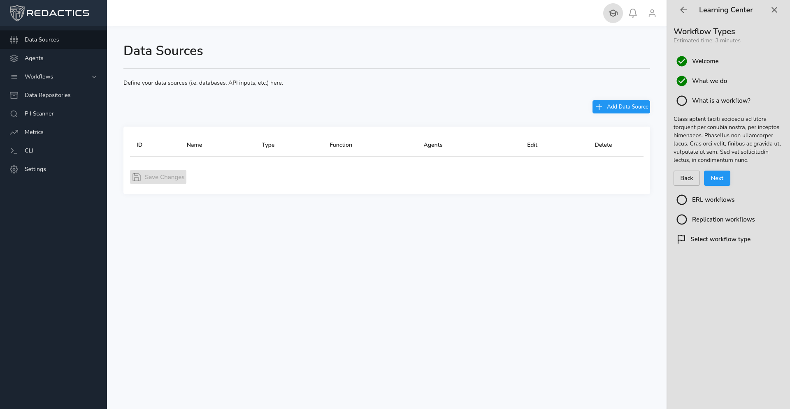
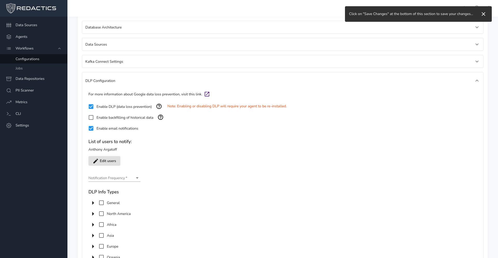
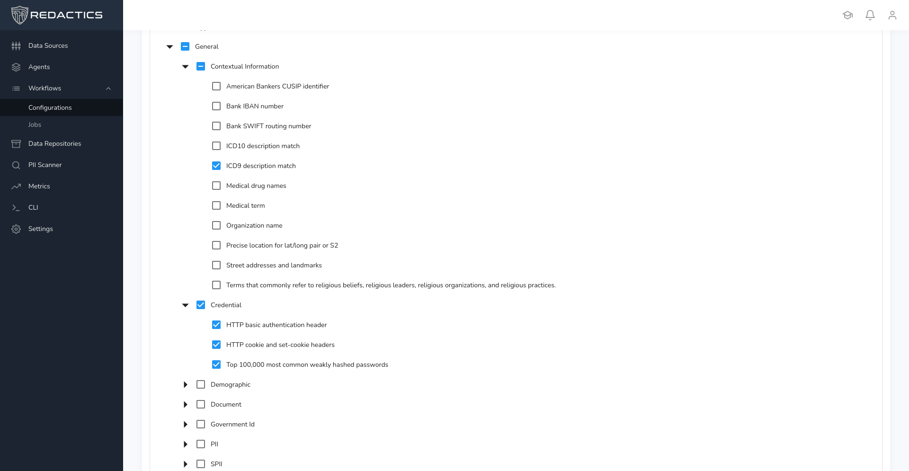

Redactics
I began working at Redactics in the summer between my 3rd and 4th years at UBC. Redactics focuses on data sanitation and replication, offering companies an efficient process of obtaining clean and safe datasets for use in data analytics. Click this link to learn more about them.
During my time with Redactics, my main task was to improve and add features to the web-based dashboard. I created a help and guide section, and improved many UX/UI features. The project used React.js for the front-end framework, Express.js for the back-end frame work, and Material UI for the component library.
While most of my time was spent on web-application tasks, near the end of the position I began to work with Kubernetes and Apache Kafka. I gained experience running Kubernetes clusters locally through docker, and .
The help center was a fun project to work on. It features standard fetch requests on each interaction which saves the current status in the database, but I ran into a problem where if a user wanted to change pages but still see their progress, how would we track that? It seemed impractical to save their progress in the database, so we ended up storing additional progress data as session cookies. This way, the user's progress would seem continuous and smooth. Below are a couple of images of the help center I created.
 Below are a couple more shots of features I worked on:
Here, I created a collapsable checkbox system from scratch. I'm quite proud of this one.
